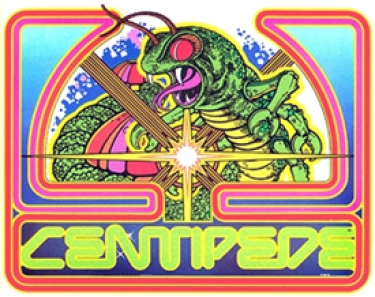

Home
Re-Designing Centipede
 Centipede did well in many aspects, given the era it was built in, and the technologies available at the time. In the 80’s it was a massive hit, drawing in many different types of players. However, in this day and age, games have had to become more engaging, more exciting, and more creative in order to keep up with the demand of a generation so completely immersed in the current technologies. The current theme in games seems to be ‘instant gratification’ and many small games do this very well, keeping their players entertained with little animations, small snippets of humor, and most importantly, fast turn-around..
Centipede did well in many aspects, given the era it was built in, and the technologies available at the time. In the 80’s it was a massive hit, drawing in many different types of players. However, in this day and age, games have had to become more engaging, more exciting, and more creative in order to keep up with the demand of a generation so completely immersed in the current technologies. The current theme in games seems to be ‘instant gratification’ and many small games do this very well, keeping their players entertained with little animations, small snippets of humor, and most importantly, fast turn-around..
 The core loop of games like Flappy Bird, Cut The Rope, and Candy Crush are short and highly rewarding to even a novice player. The general populous has a lower tolerance now for hard/fast paced games because games have become much easier to learn and play. In order to compete, Centipede would have to cut its levels down in the beginning to make them easier to master. Having a simplistic (zero text!) tutorial level of some sort might help, and having more exciting feedback (sounds/effects/etc) when centipedes are hurt/destroyed might engage the players further.
The core loop of games like Flappy Bird, Cut The Rope, and Candy Crush are short and highly rewarding to even a novice player. The general populous has a lower tolerance now for hard/fast paced games because games have become much easier to learn and play. In order to compete, Centipede would have to cut its levels down in the beginning to make them easier to master. Having a simplistic (zero text!) tutorial level of some sort might help, and having more exciting feedback (sounds/effects/etc) when centipedes are hurt/destroyed might engage the players further.
The biggest difference between Centipede and current-day popular games is the social aspect. In order to gain a larger following, most games now have not only their core-gameplay, but also a secondary game-loop. An example of this is the ever present social aspect of “sharing” high-scores (both in-game, and through second-party apps like Facebook or Twitter). In the era of social media, there is definitely a (not so) subconscious pressure to prove one’s skill through sharing their progress on their game. When Centipede was released, the best way to mimic this pressure to do well was through the highscore list and, no doubt, many gamers spent hours upon hours fighting for that top spot on that highscore list. Now, a Centipede re-release would most definitely need to upgrade to a ‘share with friends’ button after each round, creating instant bragging rights for each player to brandish, starting at level 1.
If you have questions, comments, or scathing reviews on my writing, feel free to contact me
HERE